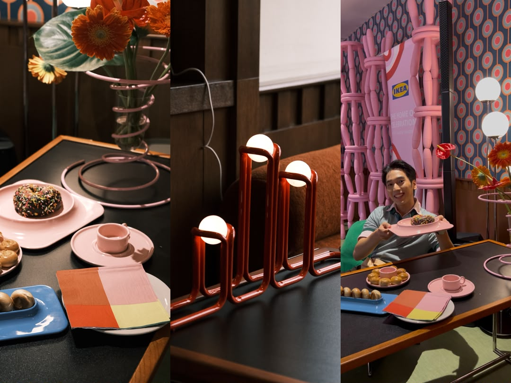
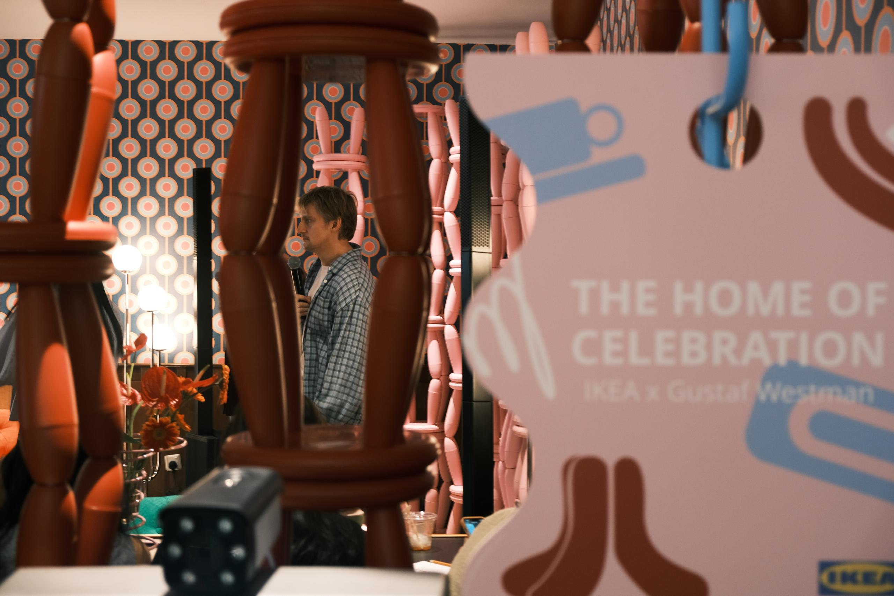
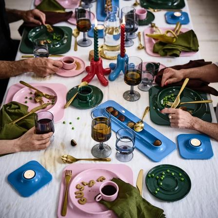
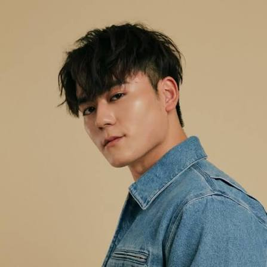
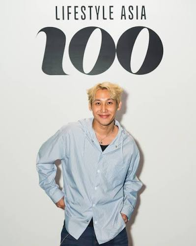

From creator insight to campaign impact.
A strategic case review of IKEA Malaysia × Gustaf Westman and the 2025 VINTERFINT collection launch — covering creator selection, content strategy, social performance and optimisation.


Media studies meets
hands-on marketing.
Honours graduate in Media Studies from Universiti Malaya, with marketing internship experience at IKEA Malaysia and practical involvement in campaign planning, social media operations and on-ground execution.
Professional Background
Integrated campaign planning, social media operations and event execution, translating media knowledge into actionable marketing strategies.
Content Creation
Travel and lifestyle creator with a combined audience of 10K+ followers across platforms and a strong understanding of short-form content behaviour.
Core Skills & Tools
Influencer marketing management, social account operations, CapCut, Canva, Google Analytics and data-led performance reviews.
IKEA Malaysia ×
Gustaf Westman
2025 VINTERFINT Collection Launch. An independent public-data-led analysis grounded by firsthand experience from the IKEA Malaysia marketing internship.

Redefining festive aesthetics.
Scandinavian minimalism meets bold colour contrasts, playful curves and a less conventional Christmas aesthetic.
18 September
Simultaneous launch at two Malaysian stores, supported by an exclusive media event, interviews and immersive displays.
Gen Z & aesthetic-led consumers
Young households, urban professionals and design enthusiasts who actively consume and share lifestyle content.
Why Gustaf?
His playful curves, colour and distinctive design language complement IKEA's minimalist and functional philosophy while giving festive design a more personal, artistic expression.
Strategic opportunity
The collaboration turns a seasonal product launch into an aesthetic-led cultural conversation, using creator influence to reach younger audiences interested in individuality, design and visual culture.
Design for the person,
not just the product.
Purchase consideration is shaped by both aesthetics and creator recommendations.
Awareness → store → conversion
Strengthen awareness while connecting online discovery with store visits, product experience and measurable sales outcomes.
Build cultural relevance
Use creators and authoritative media to maximise social exposure, strengthen affinity and contribute to membership growth and store traffic.
Make every moment a celebration
Integrate VINTERFINT naturally into everyday life and make colour, design, art and surprise feel accessible.
Use vibrant colour to give everyday life a celebratory feel and turn ordinary moments into memorable experiences.
Build one attention peak,
then keep it moving.
Flagship activation
Store launch and immersive experience, plus Gustaf's exclusive media event and interviews.
Concentrated social wave
Leading creators including Sam Wong and Cloakwork released content in a focused burst.
UGC + media amplification
Social conversation expanded through UGC participation and lifestyle/fashion media coverage.
Who performs —
not just who is famous.
Selection is framed around audience fit, content & brand fit, engagement performance and commercial potential.
| Creator | Followers | Vertical | ER | Campaign value |
|---|---|---|---|---|
| Sam Wong | 18.5K | Fashion, lifestyle | 4.48% | Polished, approachable male fashion persona |
| CloakWork | 65.7K | Street art, graffiti, digital art | 5.17% | Transforms urban landscapes into vibrant artistic canvases |
| Zhysin | 501K | Premium lifestyle, café, travel | 3.58% | High-production visual lifestyle curation |
| Kittieyiyi | 126K | Premium lifestyle, fashion styling | N/A | Sophisticated metropolitan women's lifestyle content |
| Jane Chuck | 608K | Fashion, beauty, lifestyle, parenting & entrepreneurship | N/A | Modern, authentic multi-faceted role model |
| WilliamSeng | 1.3M | Boyfriend POV, gourmet cooking | 4.25% | Thoughtful, multi-talented ideal-partner archetype |
| Maggywang | 86K | Self-care, personal growth, podcasting | N/A | Supportive community and lifestyle inspiration |
| Moses Wong | 1.1M | Comedy, lifestyle, digital/creative | 9.3% | High-reach entertainment with strong Malaysian/Gen Z relevance |
| Chris MJ | 101.9K | Street interviews, travel, lifestyle, pickleball | 2.24% | Authentic conversational storytelling |
| Anis Nabilah | 457K | Food, recipes, cooking, TV/hosting | 0.67% | Food authority and credibility |
Audience Fit
Prioritise creators whose audience profiles closely overlap with the target segment.
Content & Brand Fit
Prefer authentic, native storytelling over forced product placement.
Strong Engagement
Look for strong completion and comment rates above peers of similar scale.
Commercial Potential
Prioritise proven branded-content performance and reliable commercial delivery.
Performance changes
the creator story.

Emotion-led everyday storytelling
More than 1.3M Instagram followers and nearly 650K TikTok followers. Portfolio snapshot: 4.25% Instagram ER and 330K+ average TikTok views with 7.43% engagement.

Discovery through experience
A branded video generated 1.5M+ views and 171K+ likes, with an 11% engagement rate in the portfolio analysis.
Make the product
feel native to life.
Festive lifestyle pillars
Unboxings, creative skits and everyday scenarios show how the collection becomes part of daily celebrations.
First-three-seconds hook
High-impact visuals and playful colour capture attention immediately.
Clear CTA
Use prompts such as “Shop now” or “Share your favourite piece”.
Cross-platform mix
TikTok and Instagram Reels as primary short-form channels with consistent hashtags.
Phased amplification
Create the first attention peak on launch day and extend momentum through UGC and repurposing.
Visual consistency
Carry the colour-led design language through creator content for recognition across feeds.
Colour becomes
the campaign asset.
The strongest creative device is the collection itself: saturated colour, rounded forms and real-life usage contexts create immediate recognition.
Colour blocking & saturation
Pink, blue, green and red create an energetic and recognisable visual identity.
Product + usage context
Close-ups and wider home settings show products in use within seconds.
Dynamic storytelling
Fast-paced transitions, close details and establishing shots add rhythm.
Subtle brand cues
IKEA logos, store environments and signature cues reinforce brand association.
Reach is only useful
when attention follows.
Performance snapshot from the portfolio's campaign analysis.
Top-creator effect
Sam Wong generated nearly 60% of total views, making top creators the primary engine behind the traffic surge and overall exposure.
Channel concentration
More than 90% of traffic came from TikTok, where platform distribution and creator audiences worked together to deliver targeted reach.
Creators create reach.
Editorial creates authority.
Premium design narrative
Exclusive designer interview and behind-the-scenes debut visit narrative.
Design philosophy
In-depth feature unpacking Gustaf Westman's playful collection.
Owned storytelling
Official global press release and brand storytelling distribution.
Where the campaign
can go next.
Strengths
Distinctive colour-led collaboration; strong top-creator traffic; IKEA brand equity and physical retail experience.
Weaknesses
Heavy reliance on macro creators; activity concentrated around launch; offline sales limited to two core stores.
Opportunities
UGC and community co-creation; commerce enablement; cross-category expansion through food and lifestyle creators.
Threats
Increasing collaboration clutter; creative polarisation; concentration risk from overreliance on top creators.
Turn a launch spike
into a growth system.
Expand the creator mix
Add mid-tier and micro creators through a diversified long-tail strategy.
Diversify content formats
Use scenario-based skits and user challenges such as #HomeWithVINTERFINT.
Amplify with paid media
Put paid support behind high-performing creator assets to drive targeted traffic and conversion.
Build a UGC seeding programme
Seed products with selected everyday users and encourage original content.
Integrate commerce seamlessly
Use IKEA Shop links or product tags to shorten the journey from discovery to purchase.
Monitor KPIs in real time
Track ER, CTR and sales continuously and optimise media investment and creative direction.
What I take forward.
Data-driven decision making
Move beyond follower count and focus on average views, ER, hook effectiveness and the question: who performs?
Creativity & resonance first
Authentic everyday scenarios and playful concepts create emotional resonance and organic sharing.
Full-funnel cross-channel synergy
Coordinate TikTok, Instagram and on-ground activations to connect digital traffic with physical experiences.
Professional growth
The analysis strengthened influencer marketing understanding, market sensitivity, cross-cultural communication, planning and execution.